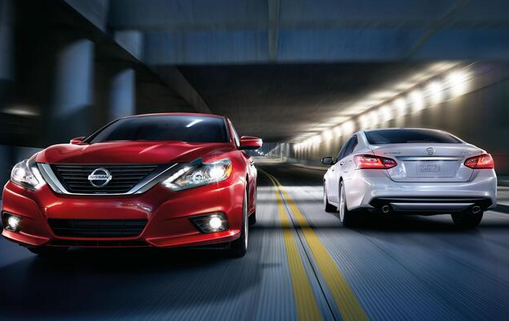

Nissan, when a layperson hears this name it is impossible that he/she doesn’t take cognizance unless he/she has been living entirely under
the rock for the last eight decades. One of the most respected makers of four-wheelers and
cars on this planet, Nissan has carved a niche for itself when it comes to being the first as well as being the best.
Most of you might already know Ford as one of the earliest makers of the automobile as we see it today, but very few of us know that Nissan
has contributed almost at par to come up with the idea of modern day four wheelers as we know them today. Facts about Nissan include that it is the
first company to roll out cars in Asia in the first half of the 20th century as mass produce.
Why is Nissan the best?
Nissan is a good car brand in terms of affordability, reliability, and safety12. They are also filled with many of the latest tech features1. Nissan cars have tremendous
longevity, affordable parts and services, good fuel economy, impressive safety ratings and driver-assist technologies, and future-ready styling2.
The only thing the Nissan brand lacks is styling, as sometimes the models go a long time without a refresh, leaving some older designs on the road
